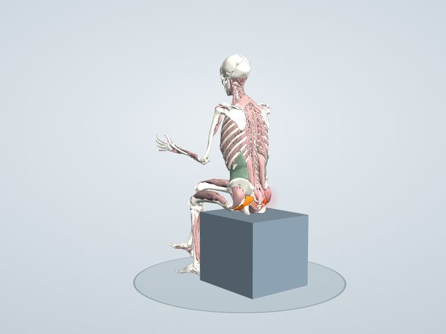

体の不調図鑑
お尻から脚のしびれ(梨状筋症候群)
お尻の奥にある梨状筋が硬くなり、その下を通る坐骨神経を圧迫して、お尻から太ももの裏にかけて痛みやしびれが出る状態。坐骨神経痛の原因の一つです。
3Dで原因の筋と対策を見る 無料で見られます

体の中で起きていること
- 梨状筋が硬く厚くなり、すぐ下を通る坐骨神経を圧迫している
- 近くの双子筋・内閉鎖筋も縮んでいる
- 中殿筋が弱く、梨状筋が骨盤を支える役を代わりに負っている
痛む場所
きっかけ
- 長い時間座る(硬い椅子、後ろのポケットに財布を入れたままなど)
- 脚を組むくせ
- ランニングなどによる、お尻の筋の使いすぎ
- お尻の筋のバランスの崩れ
原因と対策
原因の筋の状態(弱い・こっている・縮んでいる)ごとに、対応する対策(使う・ほぐす・ストレッチ)を組にしています。「中心」は、この不調でとくに大切な組です。
原因緊張が続いて、こっている 中心
- 梨状筋
関連: 双子筋・内閉鎖筋・大殿筋
対策ほぐす
お尻の奥をボールでほぐす
- お尻(大殿筋・梨状筋・中殿筋)
- 床に座ってお尻の下にテニスボールを置き、体重をかけてゆっくり転がす。脚のしびれが強くなる場合は中止する。
対象: 大殿筋・梨状筋・中殿筋
原因縮んで硬くなっている 中心
- 梨状筋
関連: 双子筋・内閉鎖筋
対策ストレッチ
お尻の奥の筋を伸ばす
- 4の字(右のお尻)
- あお向けで両膝を立て、右の足首を左の太ももにのせて、左脚を胸へ引き寄せる。 右膝を外へ押し開くようにすると、お尻の奥(梨状筋)が伸びます。
おもに梨状筋・大殿筋・中殿筋 - 膝を抱える(右)
- あお向けに寝て、右膝を両手で胸に引き寄せる。 反対の脚は床に伸ばしたまま、腰を床に押しつけるようにします。
おもに大殿筋・脊柱起立筋(腰)
原因弱くなっている(うまく使えていない)
- 中殿筋
関連: 腹横筋
対策使う(鍛える)
中殿筋を使い、梨状筋の負担を分ける
- あお向けで膝を開く(右)
- あお向けで両膝を立て、骨盤を動かさないようにして、右膝をゆっくり外へ開いて戻す。 腰が浮いたり骨盤が傾いたりしない範囲で。横向きに寝て膝を開く「クラムシェル」も同じ筋を使います。
おもに中殿筋・大殿筋・股関節を外にひねる筋
アプリでは、それぞれの対策の動きで使われる筋(赤)・伸ばされる筋(青)を3Dで再生し、ほぐす場所を番号の印で表示できます。
生活の工夫
- 長く座るときは、こまめに立ち上がる
- 脚を組むくせを減らす
- ズボンの後ろのポケットに財布を入れたまま座らない
こんなときは医療機関へ
しびれが広がる・強くなる、足に力が入らない、尿や便の異常がある場合は、すぐに受診してください。
同じ部位の不調
ここで紹介しているのは一般的な情報で、診断や治療の代わりにはなりません。痛みやしびれがあるとき、症状が続くときは医療機関を受診してください。ストレッチや運動は痛みのない範囲で行い、痛みが強くなる場合は中止してください。